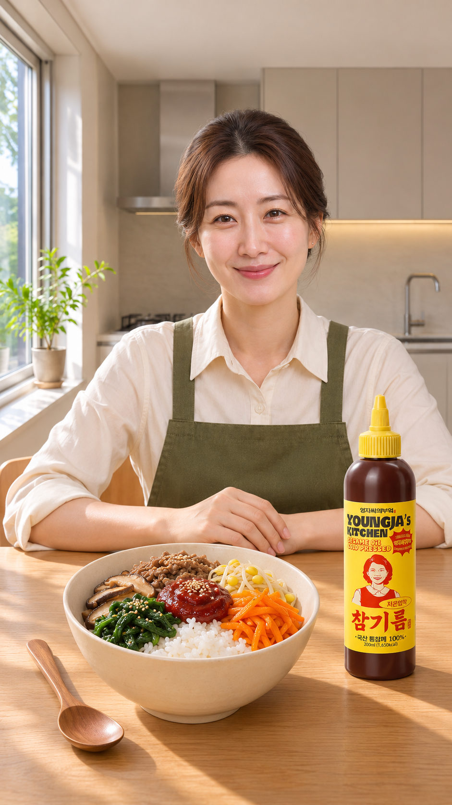

이전 · 재료 중심의 맛의 파도
기존 결과 재사용 · 새 생성 없음
ORDER / STUDIO · FOUR MODELS · 2026.11.21
← 소재 테스트시댄스2.5·클링4.0 기존 결과를 보존하고, 클링3.0 일반판과 Omni를 각각 한 판씩 추가했습니다. 기획과 인물·제품·주방은 최대한 유지하되 모델이 지원하는 입력 방식에 맞췄습니다. 기존 영상을 고치는 실험이 아니라 네 모델이 처음부터 만든 결과입니다.
NEW EXPERIMENT · SEEDANCE 2.5 · 2026.11.22
앞선 파도에서는 비빔밥 재료가 주인공이 되어 참기름의 역할이 약했습니다. 오더 틀에 제품 포인트 / 제품이 만드는 변화 / 훅과의 연결을 넣고, 이번에는 참기름 줄기 → 재료를 얇게 감싸며 윤기 → 그 기름결을 따른 혼합 파도 → 완성된 비빔밥을 요청했습니다. 같은 사진 3장·시댄스 15초 새 한 판이며 재생성은 하지 않았습니다.
0초부터 함께 재생하며 장면의 타이밍까지 일치시키지는 않습니다.
기존 결과 재사용 · 새 생성 없음
480×854 · 15.072초 · Job b27da3a6-0897-49df-88ab-ef58989d39a4
새 영상 원본 열기 →이번 한 판의 대표 장면 관찰입니다. 전체 모션·BGM 청취·광고 효과 검증은 아닙니다. 요청대로 구현되지 않은 점도 함께 남깁니다.
시댄스 2.5, 15초 영상, 480p, 9대16 기준. 영자씨의부엌 저온압착 국산 스퀴즈 참기름 200ml, 15초 CF(실사 기반 초현실 푸드 광고) — 기존 인물 앵커의 아이보리 셔츠·올리브색 앞치마 차림 여성이 햇빛 드는 집 주방의 원목 식탁에서, 채소와 고추장이 담긴 비빔밥에 같은 참기름을 짜 넣고 비빈다. 제품 포인트: 참기름이 음식 재료를 얇게 감싸며 만드는 황금빛 기름결·윤기와, 고소하고 먹음직스러운 감각. 제품군의 감각적 매력이며 이 브랜드만의 독점 효능 주장은 아니다. 제품이 만드는 변화: 같은 병에서 나온 참기름 줄기가 밥알·채소·고추장 표면으로 이어져 얇게 감싼다. 재료 표면을 타고 흐르는 투명한 황금빛 기름결과 반짝이는 윤기가 분명하게 보이고, 그 결을 따라 재료가 섞여 먹음직스럽게 완성된다. 단순히 기름을 붓는 동작 뒤 음식만 움직이는 장면으로 생략하지 않는다. 훅과의 연결: 참기름 줄기→재료를 감싸는 얇은 기름결→그 윤기를 따라 재료가 들려 말리는 거대한 혼합 파도→윤기를 머금은 잘 비벼진 한 그릇으로 이어진다. 참기름이 현상의 원인과 중심이라는 관계가 화면에 남아야 한다. 훅 이름: 참기름이 감싸 만드는 맛의 파도. 효과: 참기름이 밥알과 채소를 얇게 감싸 빛나는 윤기를 만드는 과정이 눈에 띄게 보인다. 그 황금빛 기름결을 따라 재료들이 거대한 파도로 들려 말리며 화면을 휘감고, 관객이 윤기 나는 재료 사이에 들어간 듯 몰입하게 한다. 불가능한 크기와 움직임의 광고적 비유를 유지하되 기름은 얇고 투명하게 재료 표면에 붙어 있고 음식의 질감과 정체성은 읽힌다. 기름을 많이 쏟거나 웅덩이·두꺼운 기름바다로 만드는 연출은 피한다. 마지막에는 윤기를 머금고 고르게 비벼진 먹음직스러운 한 그릇으로 모여 착지한다. 반응: 여성이 그 완성된 비빔밥을 한입 먹고 음미하며 만족스럽게 미소 짓는다. 마무리: 같은 참기름 병과, 기름결이 은은하게 빛나는 완성 비빔밥을 함께 보여준다. 섞기 전 음식으로 되돌아가지 않는다. 광고 문법(참기름 사용→감싸며 윤기 생기는 변화→그 변화가 커지는 혼합 파도 훅→한입·만족→제품과 완성 음식 마무리). 이 인과를 읽을 수 있게 자연스럽게 연출하되 컷 수와 초표는 고정하지 않는다. 제품명: 저온압착 국산 스퀴즈 참기름 200ml. 브랜드: 영자씨의부엌. 톤: 밝고 따뜻하고 먹음직스러운 실사 질감과 압도적인 초현실 음식 움직임. 참기름의 고소한 이미지는 시각적 감각의 비유로 표현한다. BGM필수. 전체 15초에 어울리는 독창적인 음악과 기름결·혼합 움직임의 소리. 시트: 제품/인물/장소, 기존 사진 순서 동일. 제품 자체의 크기·색·병·가늘어지는 노즐·기존 인쇄 유지, 재료와 현상만 과장한다. 미확인 캡 개방 시연·임의 플립캡은 만들지 않는다. 장소 사진의 흰밥 대신 채소와 고추장이 있는 비빔밥이다. 글자 후반 합성. 새 화면 글자·카피·인증 표시는 생성하지 않는다. 광고 카피는 미정. 아스트라는 위 짧은 오더를 시댄스 문법으로 작성하고 시댄스가 구체적인 컷·카메라·호흡을 선택한다.
15초 세로 실사 기반 초현실 푸드 CF. 영자씨의부엌 저온압착 국산 스퀴즈 참기름 200ml. ‘참기름이 감싸 만드는 맛의 파도’. 밝고 따뜻한 햇빛, 먹음직스러운 실사 질감. 이번 광고의 주인공은 재료 표면을 얇게 감싸 윤기를 만드는 참기름이며, 거대한 혼합은 그 변화에서 자라난다. 여성이 원목 식탁의 채소·고추장 비빔밥에 같은 제품 병을 부드럽게 짠다. 병에서 나온 가느다란 참기름 줄기가 밥알과 채소, 고추장 표면에 닿아 투명한 황금빛 얇은 막으로 퍼진다. 기름이 표면의 굴곡을 타고 감싸는 과정, 그 막을 따라 새로 맺히는 빛과 윤기를 분명하게 보여준다. 밥알의 결, 채소의 섬유, 고추장의 질감은 얇은 기름결 아래 그대로 읽힌다. 단순한 기름 붓기 뒤 별개로 재료만 움직이는 장면으로 생략하지 말고, 같은 참기름 줄기에서 표면 코팅과 윤기의 변화까지 인과가 눈에 보이게 연결한다. 숟가락이 움직이자 그 반짝이는 얇은 기름결을 따라 윤기를 머금은 재료들이 들려 말린다. 그릇의 크기를 훨씬 넘어서는 거대한 혼합 파도가 되어 화면을 휘감고, 관객이 윤기 나는 재료 사이에 들어간 듯 몰입하게 한다. 기름결이 빛나는 표면을 따라 재료가 층층이 말려 섞이는 불가능한 움직임이 보인다. 확대하는 것은 재료 표면의 코팅·빛·질감과 음식 파도의 규모이며 기름의 투입량이 아니다. 기름은 얇고 투명하게 재료에 붙어 있고 밥알·채소의 정체성과 먹음직스러움이 유지된다. 두꺼운 기름바다·웅덩이·폭포나 기름범벅이 되지 않는다. 같은 윤기가 이어지며 파도는 고르게 잘 비벼진 한 그릇으로 모여 부드럽게 착지한다. 여성이 그 완성 비빔밥을 실제로 한입 먹고 음미하며 만족스럽게 미소 짓는다. 마지막에는 같은 참기름 병과, 은은한 기름결이 살아 있는 완성 비빔밥이 함께 남는다. 음식은 섞기 전 상태로 돌아가지 않는다. 사용→감싸며 윤기 생성→윤기가 이끄는 거대한 혼합→한입·만족→제품과 음식 마무리를 자연스러운 연출과 호흡으로 전달한다. 참조 순서 1 제품, 2 인물, 3 장소. 첫 사진의 짙은 갈색 병·원래 크기와 비율·노란 골이 있는 목·가늘어지는 노즐과 라벨의 기존 글자·초상·인쇄를 보존한다. 병은 또렷이 알아볼 수 있고 현상 속에서도 변형하지 않는다. 개방 구조는 미확인이므로 여는 시연과 임의 플립캡·힌지·새 부품을 만들지 않는다. 두 번째 사진의 동일 성인 여성 한 명과 아이보리 셔츠·올리브색 앞치마·머리, 세 번째 사진의 왼쪽 창 채광·주방·원목 식탁을 유지한다. 장소 사진의 흰밥은 채소와 고추장이 있는 비빔밥으로 표현한다. 제품 사진 배경 HACCP 배지와 인물 다면 시트는 복제하지 않는다. 기존 라벨 외 새 화면 글자·카피·인증 표시는 후작업을 위해 넣지 않는다. 전체 15초에 따뜻하고 경쾌하게 고조되는 독창적 instrumental BGM 필수. 얇게 퍼지는 기름결과 혼합 파도의 움직임에 맞는 소리, 착지·식기 소리가 음악과 어울린다. 고소함은 감각적 광고 비유이며 브랜드 독점 효능이나 건강·성능 주장으로 표현하지 않는다.
원본3장과 새 handoff/order를 직접 확인했다. 참기름 줄기→재료 굴곡을 따라 얇게 퍼지는 투명 코팅→새 윤기→그 기름결을 따라 들려 말리는 거대 파도라는 관찰 가능한 인과를 중심으로 작성했다. 초현실 움직임은 유지하되 기름량 대신 표면 코팅·빛·질감과 파도 규모를 확대하도록 했다. 코팅 과정을 기름 붓기 뒤 생략하지 않도록 명시했고, 완성된 음식의 상태를 한입과 마지막까지 유지한다. 초표·강제 컷수·렌즈·카메라 이동은 지정하지 않았다. 모델 읽기 조회로 지원 사양을 확인했으며 기존 동일3UUID만 일반 참조로 재사용한다. 신규업로드·앵커·시작이미지·영상입력0. 노즐 개방 구조는 미확인이며 제품 인쇄 보존은 요구사항이지 검증된 결과가 아니다.
seedance_2_5 / omni_reference · 15초 · 480p · 9:16 · 오디오 요청. 제품→인물→장소 기존 사진 3장 순서, 신규 앵커·업로드·영상 입력 없음. 사전 견적 45크레딧은 실제 차감 장부 대조가 아닙니다. 별도 아스트라 제작 세션이 실제 프롬프트를 작성·직접 제출했습니다. 부모는 짧은 오더를 전달했고 컷 수·초표·렌즈는 고정하지 않았습니다.
NEW EXPERIMENT · SEEDANCE 2.5 · 2026.11.21
Dan의 평가: “글씨를 빼면 시댄스 연출이 가장 낫지만, 모두 밋밋하다. 비비는 부분은 비현실적으로 몰입감 있게 보고 싶다.” 같은 원본 사진 3장을 유지하고, 이번에는 재료가 불가능한 크기의 파도로 말려 섞이는 사건을 오더에 명시했습니다. 아래 네 모델 비교와는 별도의 오더 방향 수정 실험이며, 새 시댄스 영상은 15초 한 판만 만들었습니다.
같은 480p로 봅니다. 동시 재생은 0초에서 출발하며 서로 다른 장면의 타이밍까지 맞추지는 않습니다.
기존 결과 재사용 · 새 생성 없음
480×854 · 15.072초 · Job c86804c1-b0d0-4b2e-a27b-3f2e16e2e289
새 영상 원본 열기 →대표 장면을 보고 기록한 이번 한 판의 관찰입니다. 전체 모션·BGM 청취·광고 성과를 검증한 결과는 아닙니다.
시댄스 2.5, 15초 영상, 480p, 9대16 기준. 영자씨의부엌 저온압착 국산 스퀴즈 참기름 200ml, 15초 CF(실사 기반의 초현실 푸드 광고) — 기존 인물 앵커의 아이보리 셔츠·올리브색 앞치마 차림 여성이 햇빛 드는 집 주방의 원목 식탁에서, 채소와 고추장이 담긴 비빔밥에 같은 참기름을 짜 넣고 비빈다. 훅 이름: 비빔밥 속 거대한 맛의 파도. 효과: 참기름이 닿고 숟가락이 움직이는 순간, 밥알·채소·고추장이 황금빛 기름의 윤기를 두른 거대한 음식 파도처럼 들려 올라와 화면을 휘감는다. 재료가 층층이 말려 섞이는 압도적인 크기와 움직임으로, 관객이 그 혼합 속에 들어간 듯 몰입하게 한다. 평범하게 젓는 장면의 단순 확대를 넘어 실제로 불가능한 재료의 움직임이 눈에 보이는 광고적 시각 비유다. 먹음직스러운 음식의 형태와 재료 정체성을 유지하고, 파도가 잘 비벼진 한 그릇의 비빔밥으로 모여 착지한다. 반응: 여성이 완성된 비빔밥을 한입 먹고 음미하며 만족스럽게 미소 짓는다. 마무리: 파도에서 완성된 잘 비벼진 비빔밥과 같은 참기름 병이 함께 보이며 끝난다. 섞기 전 음식으로 돌아가지 않는다. 광고 문법(눈길을 붙잡는 맛의 파도 훅→참기름 사용과 혼합의 인과→한입·만족→완성된 음식과 제품 마무리). 시선을 붙잡는 비현실적 움직임을 충분히 보여주면서 이 행동과 감정의 흐름을 보존한다. 제품명: 저온압착 국산 스퀴즈 참기름 200ml. 브랜드: 영자씨의부엌. 톤: 밝고 따뜻하고 먹음직스러운 실사 질감, 압도적인 초현실 혼합 연출. 고소함은 시각적 감각의 비유로 표현한다. BGM필수. 전체 15초에 어울리는 독창적인 음악과 혼합 움직임에 맞는 소리. 시트: 제품/인물/장소, 첨부 순서 동일. 제품은 원래 병의 크기·외형·색·기존 표기 유지, 음식과 주변 현상만 과감하게 키운다. 미확인 개방 방식이나 임의 플립캡을 만들지 않는다. 인물은 같은 성인 여성 한 명, 장소 사진의 흰밥 대신 채소·고추장이 있는 비빔밥. 글자 후반 합성. 새 화면 글자·카피·인증 표시는 생성하지 않으며 광고 카피는 미정. 컷 수·초단위 시간표·렌즈·카메라 이동은 고정하지 않는다. 위 의도와 변화가 분명하게 보이도록 아스트라가 시댄스 문법으로 전달하고, 시댄스가 구체적인 연출과 호흡을 선택한다.
15초 세로 실사 기반 초현실 푸드 CF. 영자씨의부엌 저온압착 국산 스퀴즈 참기름 200ml. 훅은 ‘비빔밥 속 거대한 맛의 파도’. 밝고 따뜻한 햇빛, 먹음직스러운 실사 재료 질감과 압도적으로 불가능한 음식 움직임을 결합한다. 같은 여성이 원목 식탁의 채소·고추장 비빔밥에 참조의 참기름 병을 짜 넣고 숟가락으로 비비기 시작한다. 참기름이 닿고 숟가락이 움직이는 순간, 밥알·채소·고추장이 황금빛 참기름 윤기를 두른 거대한 음식 파도로 솟구친다. 그릇의 크기를 훨씬 넘어선 재료의 파도와 볏이 층층이 말리고 접히며 서로 섞이고 화면 전체를 휘감는다. 관객이 윤기 나는 밥알과 채소, 붉은 고추장의 거대한 혼합 안에 들어온 듯한 몰입감. 단순한 젓기 확대가 아닌, 눈에 보이는 불가능한 크기와 공중에서 말려 섞이는 움직임이 이 광고의 핵심 절정이다. 밥알은 밥알로, 채소는 채소로 알아볼 수 있고 고추장의 결·황금빛 윤기가 먹음직스럽다. 참기름 사용이 이 현상의 분명한 원인이며 병과 여성은 정상적인 크기와 모습으로 유지된다. 거대한 파도는 다시 하나로 모여 같은 그릇에 잘 비벼진 완성 비빔밥으로 부드럽게 착지한다. 여성이 그 완성된 비빔밥을 실제로 한입 먹고 음미하며 만족스럽게 미소 짓는다. 마지막에는 파도에서 완성된 잘 비벼진 비빔밥과 같은 제품 병이 함께 남는다. 끝의 음식은 섞기 전 상태로 되돌아가지 않는다. 파도의 압도적인 변화와 한입·미소·마무리 모두 읽히도록 자연스러운 연출과 호흡을 선택한다. 참조 순서는 제품/인물/장소. 첫 사진의 짙은 갈색 병, 노란 골이 있는 목과 가늘어지는 노즐, 원래 크기·비율·색과 라벨의 기존 글자·초상·인쇄를 보존한다. 음식 현상만 과감하게 키우며 병 자체는 변형하지 않는다. 노즐 개방 방식은 미확인이므로 여는 시연이나 임의 플립캡·힌지·부품을 만들지 않는다. 두 번째 사진의 동일 성인 여성 한 명, 아이보리 셔츠·올리브색 앞치마와 머리를 유지한다. 세 번째 사진의 햇빛 주방·왼쪽 창·원목 식탁을 사용하되 음식은 흰밥만이 아닌 채소·고추장 비빔밥이다. 제품 사진 배경의 HACCP 배지와 인물 다면 시트는 옮기지 않는다. 수영장·파도를 타는 사람·홍수 사고·새 캐릭터를 추가하지 않고 제품에서 시작된 음식 파도에 집중한다. 기존 라벨 외 새 화면 글자·카피·인증 표시는 후작업을 위해 생성하지 않는다. 15초 전체에 독창적인 밝고 따뜻하면서 고조되는 instrumental BGM 필수. 음식 파도가 솟고 말려 섞이는 움직임에 맞는 풍성한 소리, 착지와 식기의 작은 소리가 음악과 어울린다. 고소함은 시각·음향의 광고적 비유이며 건강효능 주장으로 표현하지 않는다.
제품·인물·장소 원본3장을 직접 확인했다. 새 오더의 핵심을 정상적인 혼합 확대가 아니라 그릇을 훨씬 넘어 솟고 층층이 말려 화면을 감싸는 불가능한 음식 파도로 전달했다. 이전의 현실 혼합 제한이나 거대 움직임 금지를 복사하지 않았다. 제품 사용→압도적인 음식 파도→완성된 한 그릇 착지→한입과 만족→음식·제품 마무리의 인과와 음식 상태 연속성을 명시했다. 병·인물 정체성은 유지하고 음식 현상만 확대한다. 초표·강제 컷수·렌즈·카메라 이동은 지정하지 않았다. 공식 모델 사양을 확인해 omni_reference/15초/480p/9:16/generate_audio=true로 설정했다. 기존 보관 UUID3개만 재사용하며 신규업로드·시작이미지·입력영상·새앵커는 없다. 노즐 개방 구조는 미확인이고 라벨·형태 보존은 결과에서 확인할 사항이다.
모델 seedance_2_5 / omni_reference · 15초 · 480p · 9:16 · 오디오 요청. 기존 제품→인물→장소 사진 3장 순서, 신규 업로드·앵커·입력 영상 없음. 사전 견적 45크레딧은 실제 차감 장부 대조가 아닙니다. 부모는 짧은 오더를 넘기고 별도 아스트라 제작 세션이 실제 프롬프트를 작성·직접 제출했습니다. 컷 수·초단위 콘티·렌즈는 고정하지 않았습니다.
기본은 네 영상 모두480×854 비교용입니다. 각 제목의 체크를 끄면 같이 재생할 대상에서 제외됩니다.
비교용480p는 클링 원본을 크기만 줄인 사본이며,480p 드래프트 생성이나 글씨 복원은 아닙니다. 체크를 해제하면 각 원본 해상도로 전환됩니다. 같이 재생은 시간을0초부터 시작할 뿐, 서로 다른 연출의 장면까지 일치시키는 것은 아닙니다.
사용 중 라벨과 마지막 정면 라벨을 따로 봅니다. 큰 제품명이 읽히는 것과 작은 인쇄까지 원본과 같은 것은 다릅니다. 아래는 이번 각1판의 대표 장면 관찰이며 모델 전체의 순위가 아닙니다.
| 항목 | 시댄스 2.5 | 클링4.0 일반판 | 클링3.0 일반판 | 클링3.0 Omni |
|---|---|---|---|---|
| 사용 중 라벨 | 작은 글자와 인쇄 변형. 제품 원문 보존 미통과. | 큰 표기는 알아볼 수 있으나 작은 글자 변형. | 큰 제품명은 읽히지만 시작 이미지보다 인쇄·초상·비율이 달라짐. 시작 이미지 자체의 작은 인쇄도 원본 일치 미검증. | 인쇄·초상·글자 형태가 바뀜. 원본 보존 미통과. |
| 마지막 라벨 | 원본 인쇄의 정확한 보존은 확인되지 않음. | 큰 참기름 표기는 비교적 읽힘. 작은 원문까지 같지는 않음. | 큰 글자는 읽히나 작은 글자 변형. 병 어깨가 투명해져 원제품과도 달라짐. | 큰 브랜드·제품은 대략 알아볼 수 있으나 작은 인쇄와 초상 변형. |
| 병·뚜껑·사용 | 원본에 없는 플립캡·힌지 생성. | 확인한 장면은 원래 노즐에 더 가까움. 실제 압착 동작 정밀 검수는 안 됨. | 시작 이미지의 노즐을 플립캡으로 바꾸고 여는 동작 추가. 기울여 붓기는 보이나 압착은 불명확. | 임의 플립캡 추가. 제품 외형 조건 미충족. |
| 비비는 절정 | 비빔밥 혼합 근접 표현이 있음. | 혼합 근접 표현이 있음. | 부분적으로 젓지만 재료가 분리된 채 남음. 화면을 채우는 윤기·혼합 절정이 약함. | 혼합 근접 표현은 있음. 다만 처음 없던 채소가 혼합 때 나타남. |
| 한입·만족 반응 | 한입과 미소 표현이 있음. | 한입과 미소 표현이 있음. | 먹고 씹기는 보임. 마지막은 미소보다 찡그린 표정에 가까움. | 입 접촉·음미는 보이나 숟가락에 음식이 남음. 확실한 만족 미소는 불명확. |
| 마무리·음식 연속성 | 섞은 음식과 병을 함께 보여줌. | 혼합·먹기 뒤 마지막 음식이 섞기 전 채소·고추장 상태로 돌아감. | 음식과 병은 함께 보이지만 부분 혼합 상태. 완성된 한 그릇을 보여주는 마무리가 약함. | 마지막이 채소 비빔밥이 아닌 흰밥·고추장으로 되돌아감. |
| 소리·검토 범위 | 오디오 트랙 있음. 끝 약 0.304초 저음량 구간. BGM 청취·전체 모션 검수는 하지 않음. | 오디오 트랙 있음. BGM 청취·전체 모션 검수는 하지 않음. | 오디오 트랙 있음. 0.3초 이상 저음량 구간은 검출되지 않음. BGM 청취·전체 모션 미검수. | 오디오 트랙 있음. 0.3초 이상 저음량 구간은 검출되지 않음. BGM 청취·전체 모션 미검수. |
모바일에서는 표를 가로로 밀어 볼 수 있습니다. 전체 모션·BGM 청취·광고성과를 검증한 결과는 아닙니다.
같은 비빔밥 사용→혼합의 절정→한입·만족→음식과 제품 마무리,15초·9:16·따뜻한 톤·BGM 요구를 유지했습니다. 프롬프트는 아스트라가 모델 문법에 맞춰 정리했으며 컷·초단위 콘티는 강제하지 않았습니다.
| 조건 | 시댄스 2.5 | 클링4.0 일반판 | 클링3.0 일반판 | 클링3.0 Omni |
|---|---|---|---|---|
| 모델 | seedance_2_5 | kling4_0 | kling3_0 | kling_o3_image_reference |
| 실제 입력 방식 | omni_reference | reference-to-video | std | std |
| 사진·이미지 | 기존 제품·인물·장소 사진3장 | 같은 원본 사진3장 | 원본3사진으로 GPT가 준비한 시작 이미지1장 | 같은 원본 사진3장 |
| 원본 해상도 | 480×854 | 720×1280 | 720×1280 | 720×1280 |
| 실제 길이(초) | 15.072 | 15.041667 | 15.041995 | 15.041995 |
| 사전 견적(크레딧) | 45 | 37.5 | 30 | 18.75 |
일반3.0은 같은 원본3사진을 그대로 넣은 것이 아니라, 그 사진들을 바탕으로 GPT가 만든 시작 이미지1장을 받았습니다. 시작 이미지 준비 단계의 차이도 결과에 영향을 줄 수 있습니다. 해상도·품질모드·프롬프트·입력 방식이 완전히 같은 통제 실험은 아닙니다. 사전 견적은 실제 차감 장부 대조가 아닙니다.
구독 GPT 기본 이미지 생성으로 같은 제품·인물·주방을 한 장면으로 준비했습니다. 큰 제품명·노즐·의상·주방을 확인했지만 작은 인쇄까지 원본 픽셀과 완전히 같다는 검증은 아닙니다. 일반3.0의 글씨는 이 시작 이미지와 원본 제품 사진을 함께 대조해야 합니다.

Use case: ads-marketing, identity-preserving compositing. Create ONE photorealistic vertical 9:16 opening frame for the same 15-second sesame-oil bibimbap commercial. This is a composed scene from the THREE PROVIDED REFERENCE IMAGES, not a redesign of the product and not a contact sheet. Image 1 is the EXACT product photo and serves as a supporting insert: retain the existing bottle pixels/printed design as faithfully as possible, including its dark brown slender body, exact yellow ribbed neck and tapered nozzle and original front-facing label, original portrait, typography, text and proportions. Do not invent a hinge or flip cap. Do not carry over the yellow background or separate HACCP badge. Image 2 defines ONLY the one adult woman's identity, brown low-bun hair, ivory shirt, olive apron and beige trousers. Do not copy its three-panel sheet layout. Image 3 is the location reference/edit target: keep the same modern pale-beige home kitchen, large window on camera left, warm daylight and wood dining table, but replace the plain white rice with an appetizing bowl of NOT YET MIXED bibimbap: distinct white rice, cooked green vegetables, thin orange carrot strips and a red gochujang mound. Opening composition: medium-close dining-table view, the matching woman naturally seated behind the bowl, her face clearly recognizable in the upper part of the image. The bibimbap in the cream ceramic bowl occupies the foreground and is the visual attraction. Place ONE original sesame-oil bottle upright next to the bowl, completely visible and front label facing the camera, large enough to read, at believable 200ml size. Her natural hands are resting ready to pick up the product; she is not squeezing or opening it yet. ONE wooden spoon rests naturally next to the bowl. No floating objects, time-freeze, extra people, duplicate bottles, pouring stream, fantasy storm or new captions. Keep this a convincing appetizing real food advertising photograph with natural depth, without overdecorating or changing the existing kitchen/wardrobe. Important invariant: preserve the original front label and its exact existing words, not approximate advertising text: 영자씨의부엌 / YOUNGJA'S KITCHEN / SESAME OIL / COLD PRESSED / 저온압착 / 참기름 / 국산 통참깨 100% / 200ml (1,650kcal). The product must look like a faithful photographic insert from Image 1, with lighting/shadow matched to the kitchen. No new labels, swapped portrait, altered spelling, invented product features or certification. This frame will be the actual START IMAGE given to Kling 3.0, so all three identities must be established without imposing the later camera, cut count or mixing choreography. Produce only this single finished image.


시댄스 2.5, 15초 영상, 480p, 9대16 기준. 영자씨의부엌 저온압착 국산 스퀴즈 참기름 200ml, 15초 CF(실사) — 기존 인물 앵커의 아이보리 셔츠·올리브색 앞치마 차림 여성이 햇빛 드는 집 주방의 원목 식탁에서, 채소와 고추장이 담긴 비빔밥에 참기름을 짜 넣고 비빈다. 훅 이름: 한 그릇 속 맛의 절정. 효과: 참기름이 밥·채소·고추장 사이로 섞이는 순간을 확대하고 강조해, 재료의 움직임과 윤기가 화면을 가득 채우며 고소함이 느껴지도록 드라마틱하게 표현한다. 반응: 완성된 비빔밥을 한입 먹고 음미하며 만족스럽게 미소 짓는다. 마무리: 먹음직스러운 비빔밥과 같은 참기름 병이 함께 보이며 끝난다. 광고 문법(훅→사용·효과→반응→마무리). 제품명: 저온압착 국산 스퀴즈 참기름 200ml. 브랜드: 영자씨의부엌. 톤: 밝고 따뜻하고 먹음직스러운 실사 푸드 광고. BGM필수. 시트: 제품/인물/장소, 첨부 순서 동일. 제품 외형·기존 표기 유지. 글자 후반 합성. 광고 카피는 미정.
원문의 시댄스·480p 표기는 최초 기록이며,각 모델 실제 사양은 위 조건표와 실제 요청 기록을 따릅니다.
같은 별도 아스트라 제작 세션이 작성·직접 제출했습니다. 호출 시 gpt-6-astra 지정,세부 실행 모델명은 독립 확인하지 못했습니다. 앞선 네 모델 비교에서 새로 추가했던 영상은 일반3.0 한 판과 Omni 한 판,총2판입니다. 이번 맛의 파도 시댄스 한 판은 위에 별도로 추가했습니다. 기존 시댄스와4.0을 다시 생성하지 않았습니다.
15초, 9:16 실사 푸드 CF. 영자씨의부엌 저온압착 국산 스퀴즈 참기름 200ml. 밝고 따뜻하며 먹음직스러운 분위기. 훅은 ‘한 그릇 속 맛의 절정’: 시작부터 비빔밥의 밥알·채소·고추장과 윤기가 생생하게 읽히도록 한다. 아이보리 셔츠와 올리브색 앞치마를 입은 참조 여성이 햇빛 드는 집 주방 원목 식탁에서 같은 참기름 병을 자연스럽게 짜 비빔밥에 넣고 비빈다. 제품과 짜 넣는 사용 동작을 분명하게 보여준다. 참기름이 밥·채소·고추장 사이로 스며들고 섞이는 순간을 확대·강조해 재료의 움직임과 촉촉한 윤기가 화면을 가득 채우는 먹음직스러운 절정을 만든다. 실제 음식 안에서 일어나는 혼합의 감각이다. 이어 여성이 완성된 비빔밥을 실제로 한입 먹고 음미하며 만족스럽게 미소 짓는다. 마지막에는 먹음직스러운 비빔밥과 같은 참기름 병이 함께 보이며 충분히 끝맺는다. 사용→혼합의 절정→한입과 만족→음식·제품 마무리 순서를 보존하되 자연스러운 연출과 호흡을 선택한다. 참조 순서: 1 제품, 2 인물, 3 장소. 제품 사진의 짙은 갈색 병, 노란 골이 있는 목과 가늘어지는 노즐 외형, 노란 라벨의 기존 글자·초상·색·비율을 그대로 유지한다. 같은 병이 사용과 마무리에 등장하고 제품을 배경에 작게 숨기지 않는다. 실제 개방 방식은 미확인이므로 캡 개방 시연이나 새 힌지·플립캡·분리뚜껑·부품을 만들지 않는다. 인물 참조는 동일 여성 한 명의 외모·머리·의상 기준이며 다면 시트를 복제하지 않는다. 장소 참조는 왼쪽 창의 햇빛·주방·원목 식탁 기준이다. 음식은 사진의 흰밥만이 아니라 채소와 고추장이 있는 비빔밥으로 바꾼다. 제품 사진 배경의 HACCP 배지는 가져오지 않는다. 원래 라벨 외 새 글자·카피·로고·인증 표시는 생성하지 않는다. 새 글자는 후반 합성 예정이다. 시간정지·떠 있는 숟가락·기름폭풍·거대 공간 회오리·세계 릴레이 없이 실제 음식의 혼합을 표현한다. 건강효능이나 향의 객관적 측정 주장은 하지 않는다. 15초 전 구간에 따뜻하고 경쾌한 독창적 instrumental BGM 필수. 비비는 소리와 식기의 생활음은 음악과 자연스럽게 어울린다. 기존 음악·명화·캐릭터를 복제하지 않는다.
사진 3장을 직접 확인했다. 사용자 교정에 따라 초단위 타임라인·컷 수·렌즈·카메라·슬로모션을 지정하지 않고, 사용→혼합 강조→한입과 만족→음식 및 제품 마무리의 의도와 순서만 담았다. 참조 장소의 흰밥을 그대로 고정하지 않고 이번 비빔밥 구성으로 명시했다. 제품 외형 및 기존 표기는 보존하되 미확인 노즐 개방 방식은 발명하지 않도록 했다. 기존 동일3 media UUID만 재사용하고 신규 업로드는 없다.
15초 세로 실사 푸드 광고, 밝고 따뜻하고 먹음직스러운 분위기. @Image1은 영자씨의부엌 저온압착 국산 스퀴즈 참기름 200ml 제품, @Image2는 동일 성인 여성의 얼굴·머리와 아이보리 셔츠·올리브색 앞치마, @Image3는 햇빛 드는 주방·왼쪽 창 채광·원목 식탁의 참조다. 세 이미지는 소재 참조이며 시간 순서의 프레임이 아니다. 음식은 채소와 고추장이 담긴 비빔밥이다. ‘한 그릇 속 맛의 절정’. 첫 화면부터 비빔밥의 생생한 재료와 윤기로 식욕을 자극한다. @Image2의 여성이 @Image3의 식탁에서 @Image1의 병을 자연스럽게 짜 비빔밥에 참기름을 넣고 비빈다. 제품과 실제 스퀴즈 사용이 분명하게 읽힌다. 황금빛 참기름이 밥알·채소·고추장 사이로 섞이는 순간을 확대하고 강조해, 재료의 움직임과 촉촉한 윤기가 화면을 가득 채우는 감각적인 절정을 표현한다. 실제 음식의 혼합 안에서 고소함을 연상시킨다. 여성이 완성된 비빔밥을 한입 먹고 음미하며 만족스럽게 미소 짓는다. 먹음직스러운 비빔밥과 같은 참기름 병이 함께 보이는 장면으로 끝맺는다. 이 행동과 감정의 순서를 유지하며 자연스러운 연출과 호흡을 선택한다. @Image1의 갈색 병 몸체와 비율, 노란 목·노즐의 원래 외형, 라벨의 기존 글자·초상·색·인쇄를 정확히 보존한다. 개방 구조는 미확인이므로 개방 시연 없이 사용하며 새 힌지·플립캡·분리뚜껑을 추가하지 않는다. 제품은 사용과 마무리에서 잘 보인다. 제품 사진의 바깥 배경과 HACCP 배지는 제외하고, @Image2는 다면 배치가 아닌 한 명의 여성으로 표현한다. 원래 라벨 외 새 화면 글자는 후작업을 위해 넣지 않는다. 전체 15초에 독창적인 따뜻하고 경쾌한 instrumental BGM과 자연스러운 비비는 소리·식기 소리를 포함한다.
동일 원본사진 3장을 직접 확인했다. 기존 비빔밥 기획의 음식 훅→스퀴즈 사용→혼합 윤기의 절정→실제 한입 및 만족→음식과 제품 마무리와 인물·장소·톤을 유지했다. Kling용으로 @Image1 제품, @Image2 인물·의상, @Image3 장소·채광·식탁을 명시하고 reference-to-video 모드의 일반 참조 3장으로 전송한다. 시작/끝 프레임과 소스 영상은 없으며 기존영상 편집도 아니다. 세부 초표·컷·렌즈·카메라를 지정하지 않았다. Kling4.0 실제 모델 조회에서 15초·720p·9:16·sdr·reference-to-video 지원을 확인했다. 모델 사양에는 별도 오디오 생성 스위치가 노출되지 않아 임의 파라미터를 만들지 않고 BGM 요구를 프롬프트에 명시했다. 시댄스 비교본 480p와 이번 720p 차이는 별도로 평가해야 한다. 노즐 개방 구조는 미확인이고 정확한 라벨·형태 보존은 결과 검수 대상이다.
시작 이미지의 동일 여성, 아이보리 셔츠와 올리브색 앞치마, 햇빛 드는 주방과 원목 식탁, 비빔밥과 참기름 병을 이어가는 15초 세로 실사 푸드 CF. ‘한 그릇 속 맛의 절정’. 준비된 비빔밥의 밥알·채소·고추장과 먹음직스러운 질감에서 자연스럽게 행동을 시작한다. 여성이 이미지 속 영자씨의부엌 저온압착 국산 스퀴즈 참기름 200ml 병을 집어 부드럽게 짜 비빔밥에 참기름을 넣고 비빈다. 제품과 실제 사용을 분명하게 보여준다. 참기름이 밥·채소·고추장 사이로 섞이는 순간을 확대·강조해 재료의 움직임과 촉촉한 윤기가 화면을 가득 채우며 고소함을 연상시키는 절정을 만든다. 여성이 완성된 비빔밥을 실제로 한입 먹고 음미하며 만족스럽게 미소 짓는다. 마지막에는 잘 비벼진 완성 비빔밥과 같은 참기름 병이 함께 보이며 끝난다. 이 행동과 감정 순서를 유지하며 자연스러운 연출과 호흡을 선택한다. 밝고 따뜻하고 먹음직스러운 실사 음식 광고. 시작 이미지 속 병의 갈색 몸체·비율, 노란 목과 가늘어지는 노즐 외형, 라벨의 기존 글자·초상·색·인쇄를 사용과 마무리까지 보존한다. 실제 개방 방식은 미확인이므로 개방 시연이나 임의 플립캡·힌지·새 부품을 추가하지 않는다. 제품이 알아보기 쉽게 보이게 한다. 원래 라벨 외 새로운 화면 글자·카피는 후작업을 위해 넣지 않는다. 전체 15초에 따뜻하고 경쾌한 독창적 instrumental BGM을 유지하며 비비는 소리와 식기 소리를 자연스럽게 포함한다.
준비된 start-frame.png를 직접 확인했다. 일반 Kling v3.0은 시작/끝 이미지형이므로 확인된 합성 시작 이미지 UUID 한 장만 start_image로 전송하고 원본3사진이나 입력영상·end_image를 보내지 않는다. 원래 기획의 스퀴즈 사용·혼합 윤기 강조·한입 만족·완성 비빔밥과 병 마무리를 유지하고 초단위 콘티·렌즈·컷 수를 고정하지 않았다. 실제 모델 사양에 맞춰 mode=std, sound=on, 15초9:16만 지정하고 해상도·multi-shot 임의 파라미터를 추가하지 않았다. 기존3모델은 원본사진3장 참조이고 이번은 부모가 GPT로 합성한 시작장면1장이므로 입력조건이 다르다. 시작이미지 자체의 작은 인쇄·초상은 원본 픽셀 일치가 보증되지 않으며, 이 한계와 영상에서 발생한 추가 변형을 분리해 검토한다. 새 이미지 생성·업로드는 수행하지 않았다.
15초 세로 실사 푸드 CF, ‘한 그릇 속 맛의 절정’. 참조 이미지 1(@Image1)은 영자씨의부엌 저온압착 국산 스퀴즈 참기름 200ml 제품, 이미지 2(@Image2)는 동일 성인 여성의 얼굴·머리와 아이보리 셔츠·올리브색 앞치마, 이미지 3(@Image3)는 햇빛 드는 주방·왼쪽 창 채광·원목 식탁이다. 세 사진은 소재 참조이며 시작·중간·끝 프레임이 아니다. 장소 사진의 흰밥을 채소와 고추장이 있는 비빔밥으로 표현한다. 첫 화면부터 비빔밥의 밥알·채소·고추장과 윤기로 식욕을 자극한다. 여성이 식탁에서 참조 제품을 자연스럽게 짜 비빔밥에 참기름을 넣고 비빈다. 같은 병과 실제 스퀴즈 사용을 분명하게 보여준다. 황금빛 참기름이 밥·채소·고추장 사이로 섞이는 순간을 확대·강조하여 재료의 움직임과 촉촉한 윤기가 화면을 가득 채우는 먹음직스러운 절정을 만든다. 이어 완성된 비빔밥을 실제로 한입 먹고 음미하며 만족스럽게 미소 짓는다. 마지막에는 완성된 비빔밥과 같은 참기름 병이 함께 보이며 끝난다. 이 행동과 감정의 순서로 자연스러운 연출과 호흡을 선택한다. 밝고 따뜻한 실사 음식 광고로, 고소함은 음식의 감각으로 연상시킨다. 제품의 짙은 갈색 병과 비율, 노란 목·노즐 외형, 기존 라벨의 글자·초상·색·인쇄를 사용 중과 마무리 모두 정확히 보존한다. 개방 방식은 미확인이므로 개방 시연이나 임의 힌지·플립캡·부품을 추가하지 않는다. 제품은 알아보기 쉽게 보인다. 제품 사진 배경의 HACCP 배지는 옮기지 않고 인물 사진의 다면 시트는 한 명의 여성으로 해석한다. 원래 제품 라벨 외 새로운 글자·카피는 후작업을 위해 생성하지 않는다. 전체 15초에 따뜻하고 경쾌한 독창적 instrumental BGM을 유지하고, 비비는 소리와 식기 소리가 자연스럽게 어울린다.
동일 사진3장을 직접 확인했다. 원래 비빔밥 기획의 음식 훅·스퀴즈 사용·혼합의 윤기·한입과 만족·완성 음식과 제품 마무리를 유지했다. Omni 사진 참조형에 맞춰 세 이미지 역할을 번호와 @Image 토큰으로 연결하고 단일 프롬프트로 의도를 전달한다. models_get(kling_o3_image_reference)의 공식 도구 사양에 따라 mode=std, sound=on, duration=15, aspect_ratio=9:16이며 multi_shots=false로 수동 multi_prompt를 사용하지 않는다. 초단위 타임라인·컷·렌즈는 지정하지 않았고 해상도 파라미터도 추가하지 않았다. 실제 해상도는 결과 파일에서 확인한다. handoff의 일반판용 시작이미지 문구는 이번 Omni 지시와 구분하여 사용하지 않는다. 기존 3 UUID만 재사용하고 입력영상·새 업로드·이미지 생성은 없다. 제품 개방 구조는 미확인이고 정확한 인쇄·형태 보존은 결과에서 별도 검수한다.